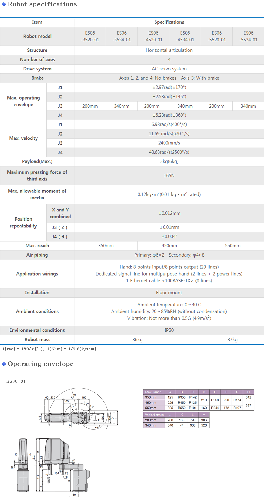
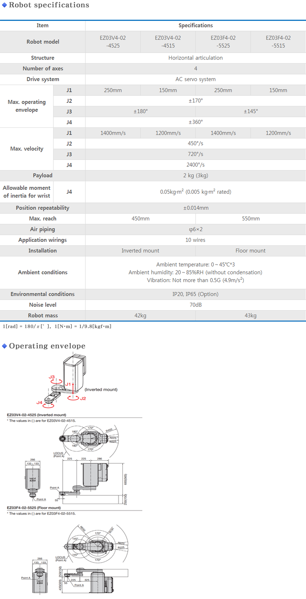
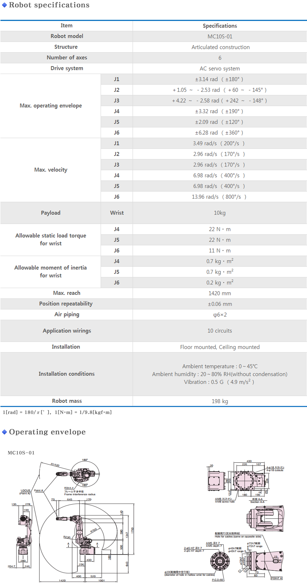
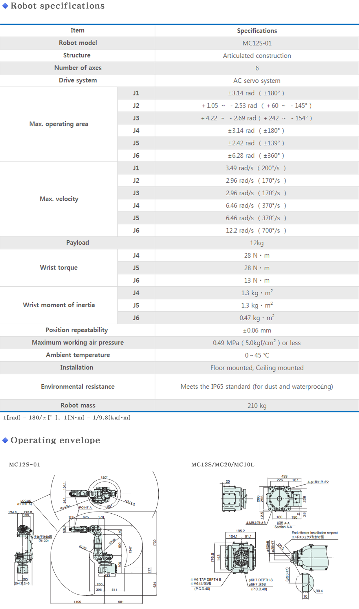
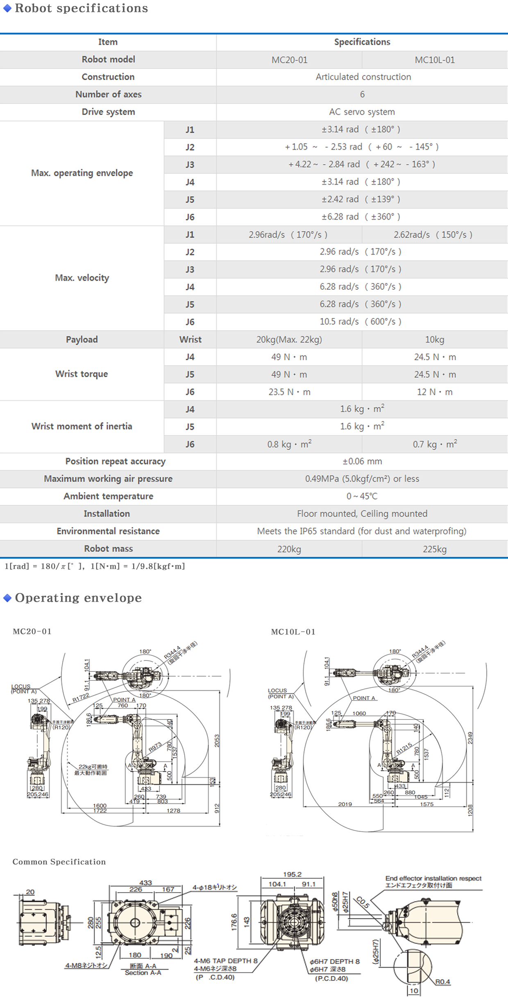
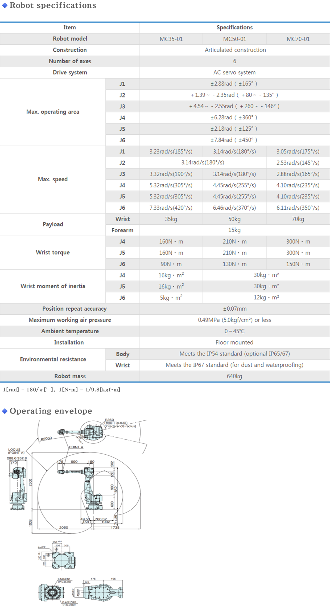
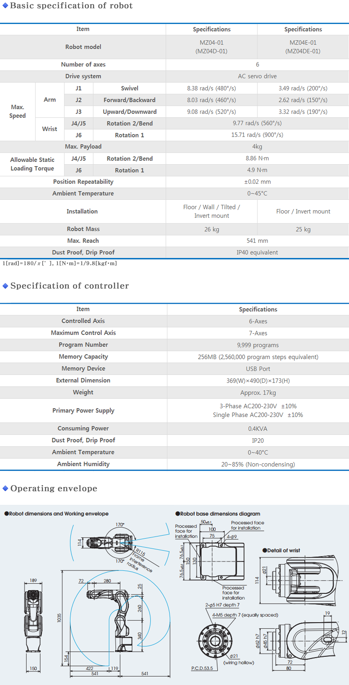
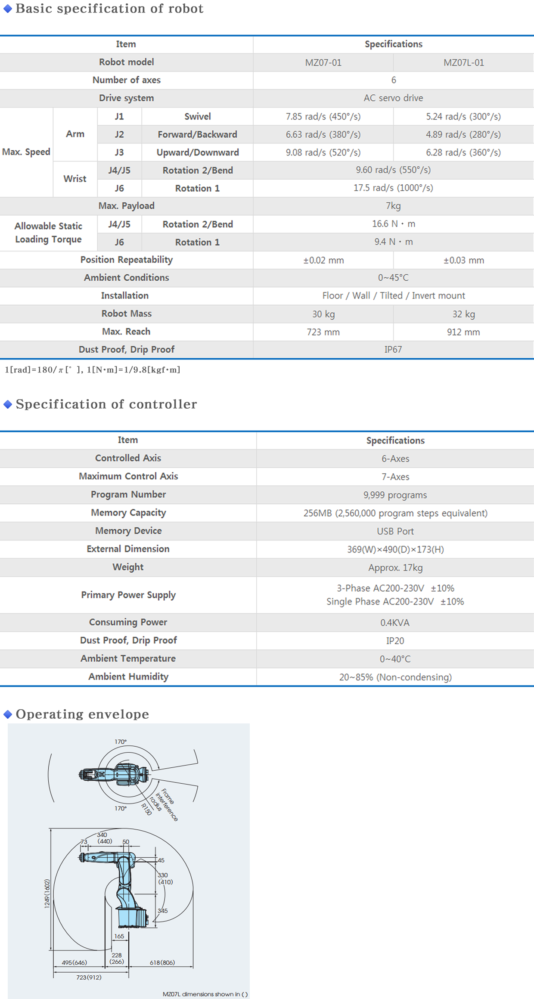
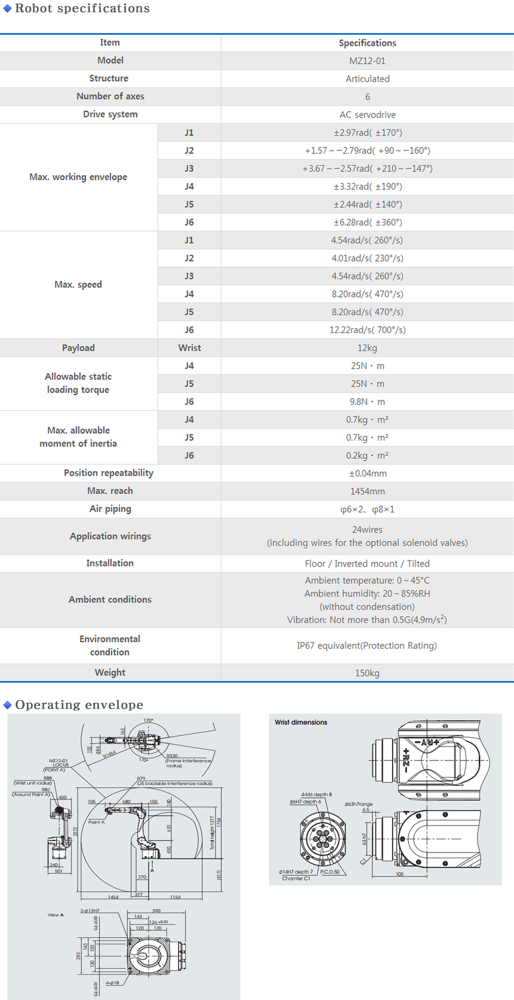

EZ03
MC10S
MC12S
MC20/MC10L
MC35/50/70
MR20/20L
MR35/50
MZ04/MZ04E
MZ07
MZ12
ST210TP
ES06
High speed handling
• Super rigid arm and servo controls give this horizontal articulated scara robot fast, high-accuracy operations
• High-speed operations meet demand to support a wide range of fields, from the handling of small parts to high precision assembly work
Prevent cable interference
• Hands with internal passage for wiring available to be mounted on tip of arm
• Wiring and piping can be run internally to the point where the hand is attached
• Minimize area in which robot cables interfere with peripheral equipment
Fully utilize installation space
• Possible to access entire periphery with swivel operation range
• Improves flexibility when considering robot layout
specifications

EZ03
Downsizing the equipment
• Installation of the inverted mount provides space saving for equipment layout.
High speed operation with the shortest path
• Thanks to its slim arm, high speed operation is possible.
• Inverted mounting allows the robot to travel the shortest path.
Smart cable routing
• A large, 36 mm-diameter hole in the tip of the wrist.
• With all wires and tubes built into the machine body, the risk of interference is reduced and reliability is improved.
Complicated operations can be performed (6-axis model : to be released in this summer)
• More complicated operations such as insertion from an angle, change of orientation in an assembly process and grinding/finishing are possible.
specifications

MC10S
Flexibility to support a variety of processes
• Wide operating envelope, plus high water and dust proof performance (wrists and body). Compatible with variety of customer work environments.
Streamlined wiring passes through hollow wrist
• Reduced risk of wiring interfering with surrounding equipment to increase applicability and make easy access to narrow space.
Compact body and powerful arm
• Smallest in its class with a mere 280 mm installation width
specifications

MC12S
Suitable for various purpose.
• Wide envelope and environment protection makes MC20 valuable robot for various kind of manufacturing processes.
Compact design
• Easy installation by compact design, and powerful wrist supports to transfer large or heavy works.
Downed size at MC20 robot.
• A compact body makes work space more compactly.
specifications

MC20/MC10L
Suitable for various purpose.
• Wide envelope and environment protection makes MC20 valuable robot for various kind of manufacturing processes.
Compact design
• Easy installation by compact design, and powerful wrist supports to transfer large or heavy works.
specifications

MC35/50/70
Adaptable to various production environments
• The new MC (35/50/70kg) has a std.IP54 rating for the body,(optional IP65/IP67) and std.IP67 for the arm/wrist. Available IP ratings make the MC Series ideal for various applications that include harsh environments that previously require d expensive robot covers.
Large working envelope and powerful robot arm
• Maximum reach of 2,050mm, (best in class).
• Strong wrist torque can handle a large variety of applications.
specifications

MR20/20L
7-axes structure
• Flexible and complex positioning and motion can be available by 7-axes structure.
Compact body, powerful arm
• Minimizing installation space.
• Payoad 20kg MAX 30kg
specifications

MR35/50
7-axes structure
• Automation with robot can be possible without enough space.
Harsh production environment
• The new MR (35/50kg) has a std.IP67.
• Available IP ratings make the MR Series ideal for various applications that include harsh environments that previously required expensive robot covers.
specifications

MZ04/MZ04E
Smart cable routing in hollow wrist
• Hand cables are neatly housed insude of the hollow wrist.
• Smart cable routing helps prevent interference with peripheral equipment, which greatly improves equipment reliability.
Compact with a wide working envelope
• The lightweight and compact robot arm helps keep the equipment simple and saves space.
• The installation area is half that of the MZ07 (A5 paper size).
Fastest operating speed in its class improves productivity
• The lightness of the robot arm and the latest control technologies give it the fastest operation in its class, which improves productivity.
specifications

MZ07
High-speed motions
• The world's fastest speed specification contributes to improved productivity.
Wiring through a hollow wrist
• Improves practicality by reducing the risk of interference between the wiring and nearby equipment, and enables easy entry into confined areas.
Supports a wide range of applications
• In addition to the standard specification, visual, additional axis and force sensor specifications are available, satisfying all needs at a production worksite.
specifications

MZ12
• Protection level: IP67 rated
Paint is coolant resistant
• Leads its class in speed in precision
• Footprint is 17% smaller than conventional robots
• Through-arm cabling and air piping included
specifications

ST210TP
High speed transfer・Improved durability
• Highly rigid design and vibration suppression control ensure high speed motion and durability improvement.
(Transfer capability : Max. 12spm under condition of light load)
New swivel arm for press tending
• Thin and light arm, payload up to 80kg. (hand tool + work piece)
• Available various orientations of work transfer. (parallel transfer, 180°/90° rotated transfer)
• Maximum press pitch up to 8m.
• Change tools while press dies are being changed by installing the Auto Tool Changer (option).
Internal air hose and application cable
• Air : φ12 X 4 line, Application cable : 40 wires
specifications